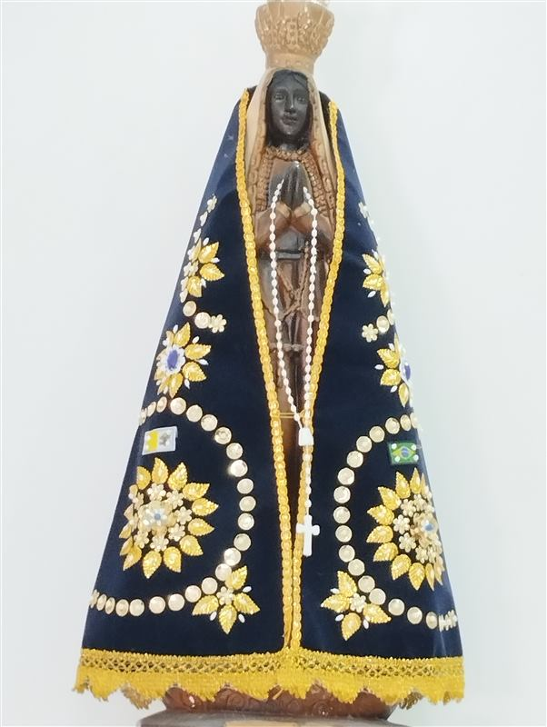
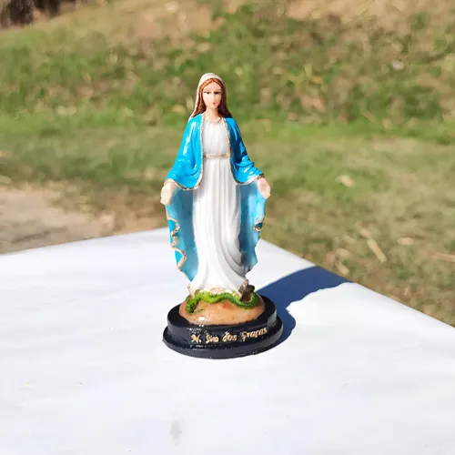
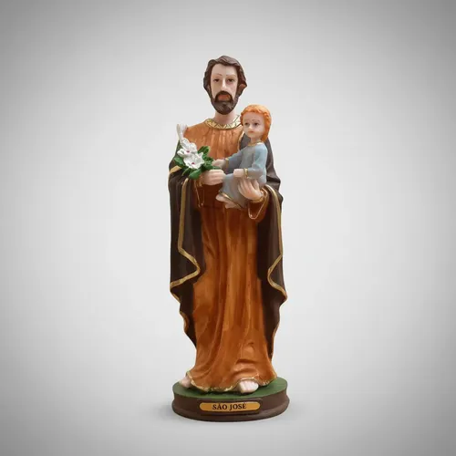
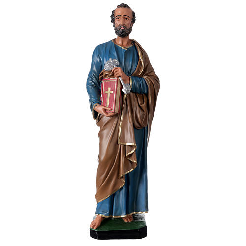
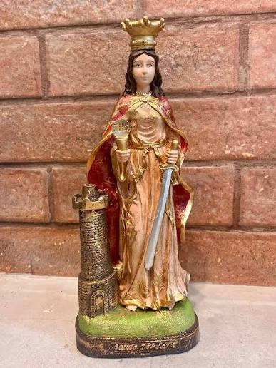
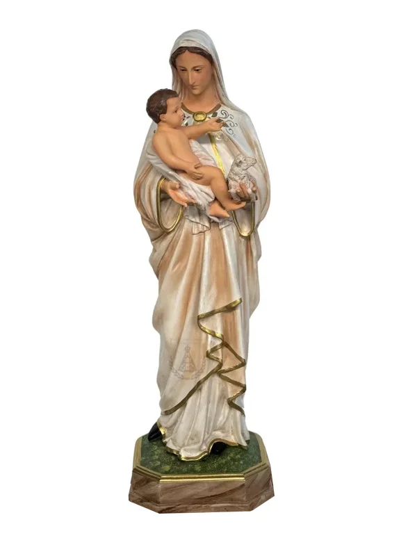
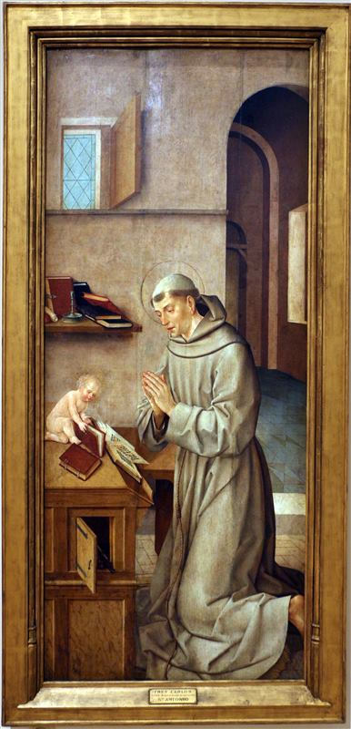
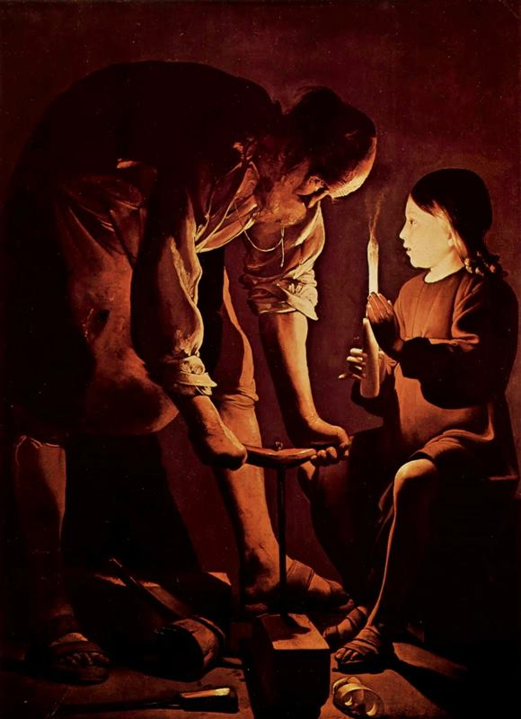

Nossa Senhora Aparecida (20 cm)
Resina, pintura a óleo feita à mão, manto azul com detalhes em dourado, base inclusa.
R$ 289,00
10 a 15 dias úteis de produção, mais o frete
Quero encomendarFé em cada detalhe.
Imagens de santos católicos em resina, pintadas à mão com tinta a óleo pela artista Regina Damalio. Cada peça é única, feita com cuidado para acompanhar a fé da sua casa ou presentear quem você ama.
Um pouco da nossa história, da nossa missão e do que nos move todos os dias.
O Ateliê São José nasceu do encontro entre a fé e o ofício das mãos da artista Regina Damalio, em devoção a São José, padroeiro dos artesãos e trabalhadores. Cada imagem sacra é feita uma a uma, unindo pintura a óleo e resina, sem produção em série — cada santo é uma peça única, como a fé de quem o recebe.
Levar imagens sacras feitas à mão, com cuidado artesanal, para cada lar.
Ser referência em arte sacra pintada à mão, unindo tradição e delicadeza em cada peça.





Peças em resina, pintadas à mão com tinta a óleo. Valores de produção; o frete é calculado à parte.

Resina, pintura a óleo feita à mão, manto azul com detalhes em dourado, base inclusa.
R$ 289,00
10 a 15 dias úteis de produção, mais o frete
Quero encomendarResina, pintura a óleo feita à mão, hábito marrom, com pássaro na mão.
R$ 219,00
7 a 12 dias úteis, mais o frete
Quero encomendar
Resina, pintura a óleo feita à mão, hábito franciscano, com o Menino Jesus e o lírio.
R$ 219,00
7 a 12 dias úteis, mais o frete
Quero encomendar
Resina, pintura a óleo feita à mão, com ferramentas de carpinteiro.
R$ 269,00
10 a 15 dias úteis, mais o frete
Quero encomendarO santo de sua devoção, feito à mão conforme sua escolha. O orçamento é enviado em até 2 dias úteis.
A partir de R$ 249,00
20 a 30 dias úteis, mais o frete
Quero encomendarFormas de pagamento: Pix (5% de desconto), cartão de crédito em até 6x sem juros ou boleto bancário (a peça é produzida após a compensação do boleto).
As imagens dos produtos acima são ilustrações de domínio público/licença aberta (Wikimedia Commons), usadas apenas como referência do santo enquanto as fotos reais das peças não são enviadas: Nossa Senhora Aparecida (foto: Diva das plantas, CC BY-SA 4.0); São Francisco de Assis (Giotto di Bondone, domínio público); Santo Antônio (Frei Carlos, foto: Sailko, CC BY 3.0); São José (Georges de La Tour, domínio público).
Do pedido até a peça chegar até você.
Cada peça é feita sob demanda, moldada em resina e pintada à mão com tinta a óleo. Por isso, os prazos variam de 7 a 30 dias úteis, conforme o produto.
Aceitamos Pix (com 5% de desconto), cartão de crédito em até 6x sem juros e boleto bancário, com produção iniciada após a compensação.
Enviamos para todo o Brasil por transportadora ou Correios, em caixa rígida com proteção interna. O frete é calculado pelo CEP de destino e somado ao prazo de produção.
Segunda a sexta, das 9h às 18h, e sábado, das 9h às 13h (horário de Brasília). Mensagens fora do horário são respondidas no próximo dia útil.
O que dizem as pessoas que já receberam uma peça do Ateliê São José.
“Recebi a Nossa Senhora Aparecida para o altar da minha avó e me emocionei com o capricho da pintura. Chegou bem embalada e no prazo combinado.”
“Encomendei um Santo Antônio para o batizado do meu afilhado. A peça é linda, ficou pronta antes do prazo e o atendimento pelo WhatsApp foi muito atencioso.”
“Pedi um São José sob encomenda de presente para o meu marido, que é marceneiro. Ele se emocionou com o cuidado na pintura e nos detalhes.”
Depoimentos ilustrativos, criados para fins de estudo (o Ateliê São José é um negócio fictício).
Tudo o que você precisa saber antes de encomendar o seu santo.
Sim, cada imagem é moldada em resina e pintada com tinta a óleo pela artista Regina Damalio — por isso, pequenas variações de tom e pincelada tornam cada peça única.
Sim. Peça pelo WhatsApp ou e-mail, informando o santo e o tamanho — o orçamento sai em até 2 dias úteis.
O prazo soma a produção (7 a 30 dias úteis, conforme a peça) e o frete, calculado pelo CEP.
Sim. É leve e durável, mas evite expor ao sol e à chuva; limpe apenas com um pano macio e seco.
Em caixa rígida, com plástico bolha e enchimento interno, para reduzir o risco de avarias no transporte.
Você pode desistir da compra em até 7 dias após o recebimento (art. 49 do Código de Defesa do Consumidor), desde que a peça esteja em perfeito estado. Peças sob encomenda seguem o combinado no orçamento.
Sim, por transportadora ou Correios, com frete calculado pelo CEP de destino.
Fale com a gente para tirar dúvidas, encomendar ou pedir um orçamento.
Seg. a sex.: 9h às 18h
Sáb.: 9h às 13h
(horário de Brasília)